🎬 Examples
Every example here is a real spec from docs/clips/, built by zoetty. Some are shown as their SVG and some as their HTML fragment: the HTML ones have text you can select.
Hello: output written by hand
The smallest useful clip. Nothing is recorded: each run's lines say what it printed, using markup for colour.
# The smallest useful clip: two commands, with their output written by hand.
title = "~/my-project"
label = "Typing two commands in a terminal: echo prints a greeting, ls lists three files"
cols = 60
out = ["hello.svg", "hello.html"]
[[run]]
cmd = "echo 'Hello from zoetty!'"
lines = ["Hello from zoetty!"]
[[run]]
cmd = "ls"
lines = ["[blue]docs[/] README.md [green]tool.py[/]"]
As an SVG:

And the same spec as an HTML fragment:
Quick start: recording real output
zoetty recording itself. Each run has an output file, so zoetty record runs it for real and keeps its colours. [record] runs the commands in a scratch folder, and setup empties it first, so the clip is the same every time it's recorded. exec is what actually runs; cmd is what's shown.
# zoetty recording itself: init a clip, build it, check it.
title = "~/my-project"
label = "zoetty init writes a starter clip spec, zoetty build renders it to SVG, and zoetty check confirms it is up to date"
cols = 72
out = ["quickstart.svg", "quickstart.html"]
[record]
cwd = "/tmp"
setup = ["rm -rf zoetty-quickstart", "mkdir zoetty-quickstart"]
[[run]]
cmd = "zoetty init clips/hello.toml"
exec = "cd zoetty-quickstart && zoetty init clips/hello.toml"
output = "captures/quickstart-init.ansi"
[[run]]
cmd = "zoetty build clips/hello.toml"
exec = "cd zoetty-quickstart && zoetty build clips/hello.toml"
output = "captures/quickstart-build.ansi"
[[run]]
cmd = "zoetty check clips/hello.toml"
exec = "cd zoetty-quickstart && zoetty check clips/hello.toml"
output = "captures/quickstart-check.ansi"
A REPL: typing into an interactive program
input is typed into the program while it's recorded, one line each time it goes quiet, so every line lands after the prompt that asked for it. After the last line zoetty sends Ctrl-D, which ends the REPL and brings back the shell prompt. env turns on Python's plain REPL, which doesn't redraw the line as you type.
# An interactive program: `input` is typed into it while recording,
# one line each time it goes quiet, so answers land after their prompts.
title = "python"
label = "A Python REPL importing zoetty's markup parser and parsing some styled text"
cols = 64
out = ["repl.svg", "repl.html"]
[record]
env = { PYTHON_BASIC_REPL = "1" }
[[run]]
cmd = "python -q"
output = "captures/repl.ansi"
input = """
from zoetty.markup import parse, plain
plain(parse("[bold]zoe[/]tty"))
[s.styles for s in parse("[bold green]ok[/] done")]
"""
pause = 0.2

Scrolling and themes
rows sets how much of the terminal is visible: past that, output scrolls up line by line. line_gap slows the output down so it can be read, and [theme] recolours the window, here to One Dark.
# Long output scrolls once it passes `rows`, and [theme] recolours the window.
title = "python -m this"
label = "python -m this printing the Zen of Python, scrolling past the bottom of a ten-row terminal"
cols = 72
rows = 10
line_gap = 0.18
hold = 3
out = ["zen.svg", "zen.html"]
[[run]]
cmd = "python -m this"
output = "captures/zen.ansi"
[theme]
bg = "#282c34"
bar = "#21252b"
fg = "#abb2bf"
blue = "#61afef"
green = "#98c379"
yellow = "#e5c07b"
red = "#e06c75"
cyan = "#56b6c2"
magenta = "#c678dd"
Hand-timed steps
For clips that aren't a series of commands, [[step]] entries say exactly when each line appears and [type ...] types text out. This one re-enacts a paulrun session and is the clip on paulrun's README.
# A hand-timed clip: [[step]] entries say exactly when each line appears.
# This is the clip on the paulrun README, re-enacting `paulrun hello.md`.
title = "~/hello"
label = "paulrun checking and running hello.md: it asks for NAME, shows the plan, runs a shell step and a Python step, and finishes ok"
duration = 16
out = ["steps.svg", "steps.html"]
cols = 56
[[step]]
at = 0.4
caret = true
lines = ["[dim]$[/] [type 1.3]paulrun check hello.md[/]"]
[[step]]
at = 2.2
lines = ["[green]hello.md: ok[/]"]
[[step]]
at = 2.8
caret = true
lines = ["[dim]$[/] [type 0.9]paulrun hello.md[/]"]
[[step]]
at = 4.2
caret = true
lines = ["NAME [dim](Who to say hello to)[/]: [type 0.5 0.4]Paul[/]"]
[[step]]
at = 5.5
lines = [
"[blue]╭─ [/][bold blue]Say hello[/][blue] ─────────────────────╮[/]",
"[blue]│[/] [dim]directory[/] /home/you/hello [blue]│[/]",
"[blue]│[/] [dim]inputs[/] NAME=Paul [blue]│[/]",
"[blue]│[/] [dim]steps[/] 1. Greet [blue]│[/]",
"[blue]│[/] 2. Count the letters [blue]│[/]",
"[blue]│[/] [dim]blocks[/] 2 run blocks [blue]│[/]",
"[blue]╰─────────────────────────────────╯[/]",
]
[[step]]
at = 6.1
caret = true
lines = ["Start? \\[y/N] [type 0.05 0.8]y[/]"]
[[step]]
at = 7.4
lines = ["", "[bold blue]1/2 Greet[/] [blue]━━━━━━━━━━━━━━━━━━━━━━━━━━━━━━━━━━━━━━━━━━━━━[/]"]
[[step]]
at = 7.7
lines = [" [dim italic]Saying hello to Paul.[/]"]
[[step]]
at = 8.0
lines = ["", " [dim]┌ [/][bold]sh[/][dim] · 10:02:13.482[/]"]
[[step]]
at = 8.4
lines = [" [dim]│[/] Hello, Paul!"]
[[step]]
at = 8.7
lines = [" [dim]└ [/][green]✓ exit 0[/][dim] · 0.0s[/]"]
[[step]]
at = 9.2
lines = [
"",
"[bold blue]2/2 Count the letters[/] [blue]━━━━━━━━━━━━━━━━━━━━━━━━━━━━━━━━━[/]",
"",
" [dim]┌ [/][bold]python[/][dim] · 10:02:13.483[/]",
]
[[step]]
at = 9.9
lines = [" [dim]│[/] Paul has 4 letters"]
[[step]]
at = 10.2
lines = [" [dim]└ [/][green]✓ exit 0[/][dim] · 0.1s[/]"]
[[step]]
at = 10.8
lines = [
"",
"[green]╭──────────────────────╮[/]",
"[green]│ ✓ [/][bold]finished ok[/][dim] · 0.1s[/][green] │[/]",
"[green]╰──────────────────────╯[/]",
]
[[step]]
at = 11.5
caret = true
lines = ["[dim]$[/] "]

In the wild
- paulrun: the README demo
- clientele: the README, plus the client generator docs
- clientele.dev: a REPL clip under the code, and the generator in action